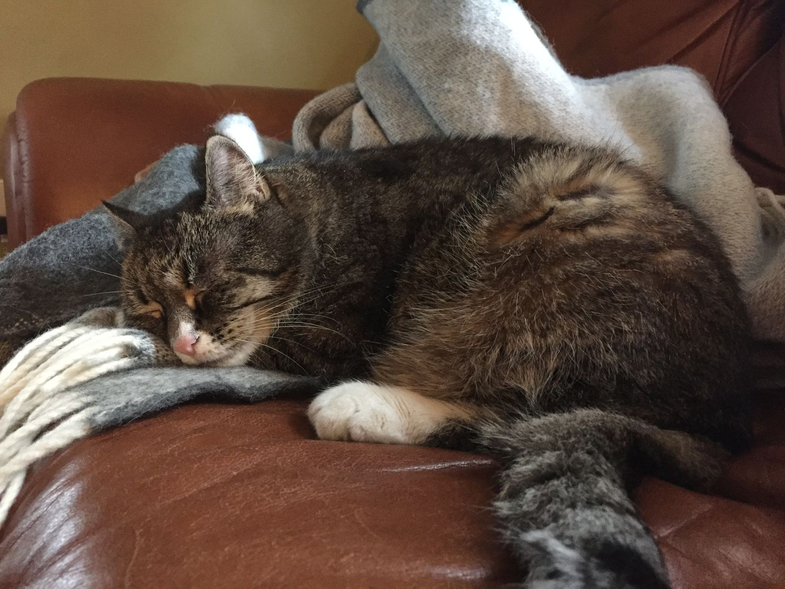

On Forgetting Faces
In the past three weeks I have had three extremely awkward experiences of running into people who I should know but could not remember. To cap it off, I listened to a podcast that helped put my mild not-actually-prosopagnosia face forgetfulness into context.

At a conference, someone sitting in front of me greeted me by name and a smile, and I sat there with a deer-in-the-headlights face. After a second, he told me his first name, which did nothing to change my face. After another few second, as a look of mild disgust came over him, he told me his last name, and I remembered him. I had interviewed him twice for a mechanical engineering job. As I made some small talk, my mind slowly recalled some information about him.
Two weeks later, I am at a cocktail party at a friend's office. Another friend, as we were walking to the party, commented that she feared she would run into someone she'd met many times before but had forgotten. However, it turned out to be me who had another instance of face forgetting. When I introduced myself to someone there, after she told me her name, I squinted, thinking that I'd met her before. She pointed out that we went hiking together last fall, and that I drove her along with two other people from Somerville to New Hampshire and back. Oops.
Fast forward just another two days and I'm getting brunch at a bar with a friend. One of the bartender exclaims "Craig", and again I respond by looking like a deer in the headlights. This time, however, I just owned it. "You're going to have to remind me who you are". When he did, my mind was instantly flooding with information I recalled about him. So this scenario ended well.
I'm actually not sure the point of writing this post. Perhaps I want to make a comment about how the number of my personal and professional acquaintances has greatly exceeded Dunbar's number, and my brain is failing under the load. Perhaps I'm just procrastinating over some other things I should be doing now. Or perhaps I am using this post as a catharsis to put the negative aspect of these experiences behind me.